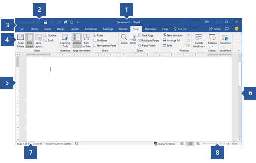

Em resumo, a introdução à informática abrange conceitos fundamentais como compreender a computação e como navegar na internet com segurança. Basicamente, o computador é organizado em três grandes funções ou áreas, as quais são: entrada de dados, processamento de dados e saída de dados. Hardware são as partes físicas do equipamento e software é o conjunto de programas ou aplicativos, instruções e regras que permitem ao equipamento funcionar, adotaremos o pacote office para o estudo devido a sua maior popularidade.
Aula 1: Ligar e Desligar e Assuntos Básicos
Aula 2: Aplicativos e Internet
Aula 3: Pesquisar na Internet e Download
Aula 4: Word
Aula 5: Excel
Aula 6: PowerPoint
Informações sobre o mundo da Informática
Bibliografia/Links Recomendados
Ligar e Desligar
1. Clique no botão Iniciar e, no menu Iniciar, clique em Ligar/Desligar.
2. No menu, coloque o cursor em Desligar ou sair, e em seguida, clique para selecionar a ação desejada (sair, suspender, desligar ou reiniciar).
Assuntos Básicos
.Dispositivos de entrada: são os componentes que o usuário conecta, como teclado e mouse.
.Dispositivos de saída: são os componentes que traduzem os dados recebidos para uma linguagem acessível ao usuário, como o monitor e as caixas de som.
.Componentes internos: são as peças que se conectam entre si para que o computador funcione.
.Um computador é formado por um conjunto de hardwares
.Exemplos de hardware

Aplicativos são programas de software presentes em celulares Android, iPhone (iOS), e em outros diversos dispositivos inteligentes, como smart TVs. Os apps podem ser gratuitos ou pagos e desempenham diversas funções: mensageiros online, streaming, gerenciadores, editores de fotos e vídeos etc. Alguns já vêm instalados de fábrica, enquanto outros podem ser obtidos na Apple Store ou na Play Store.
A internet é uma rede de conexões globais que permite o compartilhamento instantâneo de dados entre dispositivos.
No computador, é possível encontrar uma palavra ou frase específica em uma página da Web.
Abra uma página usando o Chrome. no seu computador.
No canto superior direito, clique em Mais. Buscar. ...
Digite o termo de pesquisa.
Pressione Enter para pesquisar na página. Os resultados apareceram logo em seguida.
Download significa baixar um arquivo da Internet para um dispositivo, como imagens, vídeos, músicas e documentos.
Casos de invasão por meio de aplicativos estão se tornando cada vez mais frequentes, inclusive em lojas oficiais, como a Play Store e App Store. A impressão é de que o usuário está cada vez mais vulnerável a apps maliciosos. Essa sensação parece se confirmar pelos números divulgados recentemente pela Google. A empresa revelou que, ao longo de 2017, houve um crescimento de 70% no número de apps fraudulentos, totalizando 700 mil removidos da Play Store.
Recentemente, tornou-se público o caso do Fortnite, no qual versões falsas do jogo foram liberadas para aparelhos Android e roubavam dados dos jogadores. Em diversos casos similares, os cibercriminosos agem sempre da mesma forma: criam imitações quase perfeitas do programa original, mas quando baixados pelos usuários roubam credenciais ou informações sigilosas. Pensando nos usuários e os riscos crescentes relacionados a estes downloads, a ESET, empresa de cibersegurança, separou oito dicas para garantir um download seguro.
1. Não baixar aplicativos de terceiros: mesmo que nas lojas virtuais seja possível encontrar aplicativos maliciosos, ao fazer downloads em sites de terceiros as chances de o arquivo estar comprometido são muito maiores;
2. Cuidado com permissões: alguns apps pedem consentimento para ter acesso a localização ou se associar a outras contas, tenha em mente se as autorizações pedidas fazem sentido. Um aplicativo de edição de imagens, por exemplo, realmente precisa ter acesso a sua localização?
3. Preste atenção nas propagandas: se o app tem apenas propagandas de marcas desconhecidas, ou apresenta anúncios em excesso, fique atento, pois pode ser um sinal de que o programa baixado é malicioso. Alguns malwares podem infectar seu aparelho, como foi o caso dos apps de games e vídeos clonados na Google Play.
4. Mantenha sempre seus aplicativos atualizados: as atualizações além de corrigir bugs e oferecer novas funcionalidades, também servem para melhorar as defesas contra ameaças. Os desenvolvedores melhoram seus sistemas e os tornam mais seguros a cada atualização, dando mais segurança aos usuários;
5. Pesquise os desenvolvedores: conhecer quem são os criadores dos programas é fundamental para sua segurança. Desenvolvedores com poucas informações disponíveis são suspeitos, uma vez que não é possível saber exatamente quem é a pessoa por trás do aplicativo;
6. Procure os sites oficiais: alguns aplicativos famosos possuem websites onde disponibilizam o endereço para baixar o aplicativo de forma segura, da mesma maneira que fazemos download de, por exemplo, um navegador novo no computador pelo portal oficial do desenvolvedor;
7. Cuidado com imitações: antes de baixar, confira se o aplicativo é dos desenvolvedores oficiais. Muitos hackers criam clones de programas reais para roubar dados pessoais, contas de e-mail e até dados bancários como no recente caso de apps bancários falsos no Google Play.
8. Leia atentamente os termos de uso: antes de começar a utilizar um app, leia os termos de utilização para se assegurar de que não permitiu que o programa tenha acesso a dados sigilosos tanto do seu próprio aparelho, quanto de outros aplicativos instalados.
O Microsoft Word é um software aplicativo de textos que opera no ambiente Windows. Um processador de textos é um programa usado para criar e editar documentos, visando facilitar o trabalho do usuário nesta tarefa. Este tipo de software torna mais fácil as correções, alterações e impressões de textos
1. Barra de título: exibe o nome do arquivo do documento que está sendo editado e o nome do software que você está usando. Ele também inclui os botões Minimizar, Restaurar e Fechar padrão.
2. Barra de Ferramentas de Acesso Rápido: Comandos que são usados com frequência, como Salvar,Desfazere Refazer estão localizados aqui. No final da Barra de Ferramentas de Acesso Rápido há um menu pull-down onde você pode adicionar outros comandos comumente usados ou comumente necessários.
3. Guia Arquivo: clique neste botão para encontrar comandos que atuam no documento em si, em vez do conteúdo do documento, como Novo,Abrir,Salvar como,Imprimir e Fechar.
4. Faixa de opções: os comandos necessários para seu trabalho estão localizados aqui. A aparência da Faixa de Opções mudará dependendo do tamanho do monitor. O Word compacta a faixa de opções alterando a disposição dos controles para acomodar monitores menores.
5. Janela editar: mostra o conteúdo do documento que você está editando.
6. Barra de Rolagem: permite alterar a posição de exibição do documento que você está editando.
7. Barra de Status: exibe informações sobre o documento que você está editando.
8. Controle de slide de zoom: permite alterar as configurações de zoom do documento que você está editando.
O Microsoft Word é um software aplicativo de textos que opera no ambiente Windows. Um processador de textos é um programa usado para criar e editar documentos, visando facilitar o trabalho do usuário nesta tarefa. Este tipo de software torna mais fácil as correções, alterações e impressões de textos
Os programas de apresentação, softwares de apresentação ou editores de apresentação correspondem um tipo de programa de computador que tem por objetivo geração e edição de apresentação utilizando meios digitais.
O PowerPoint é um programa desenvolvido pela Microsoft e serve para a criação de apresentações de slides, para isso, o software possui uma série de ferramentas e recursos disponíveis. Uma das suas grandes vantagens é a fácil utilização, até mesmo por principiantes.